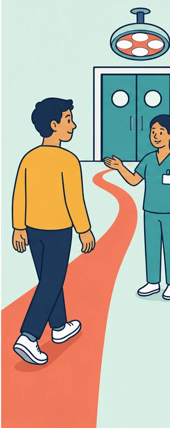

Mein Weg zum OP
Der Weg zum OP
Wichtige Informationen zu Ihrer Operation.
Zusätzliche Texte müssen medizinisch freigegeben werden.
Choose your language · اختر لغتك · Оберіть мову
Keine Sprache gefunden.
Keine Anmeldung. Die Auswahl bleibt nur auf diesem Gerät.

Mein Weg zum OP
Wichtige Informationen zu Ihrer Operation.
Zusätzliche Texte müssen medizinisch freigegeben werden.
Sie haben alle 15 Schritte angesehen.